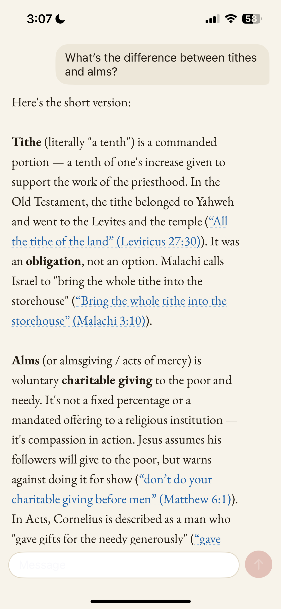
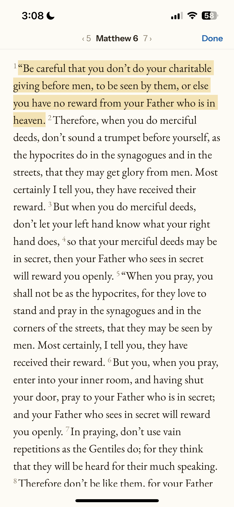

A new way to be with scripture
Stay awhile
in scripture.
Ask what you actually wonder, and be answered the way an old, patient pastor would answer: gently, and always from the page itself. Every verse opens into the passage around it, until the words are not a reference but a place you are standing in.
Reading, remade as conversation
Not a search box and not a feed. You bring a real question and follow it wherever it leads, verse by verse, at the pace of thought rather than the pace of a timeline.
The passage closes around you
Tap any verse and it opens with the words on either side, the whole chapter one gesture away. You do not glance at scripture here. You step inside it and stay.
Every verse, exactly as written
Scripture is never generated, paraphrased, or guessed. When a verse appears, it is the real text, drawn straight from the page, word for word. Never approximate. Never invented.
Answered gently, and in context
It speaks the way a wise, unhurried pastor speaks: plainly, kindly, and rooted in the text. Ask anything, however small. You will not be rushed, ranked, or sold anything.



How it feels
A question, and a place to sit with the answer.
-
01
Ask honestly
Say what you actually want to understand. The answer comes back calm, and cites its scripture as it goes.
-
02
Open the verse
Tap a citation. The passage rises up in full, and the whole chapter is one gesture further in.
-
03
Read all around it
Open the whole chapter, the verse held in the light of everything beside it, then step back out where you began.
“Be still, and know.” Sojourn is built for the second half of that sentence: the knowing that only comes when you stop hurrying.
after Psalm 46:10